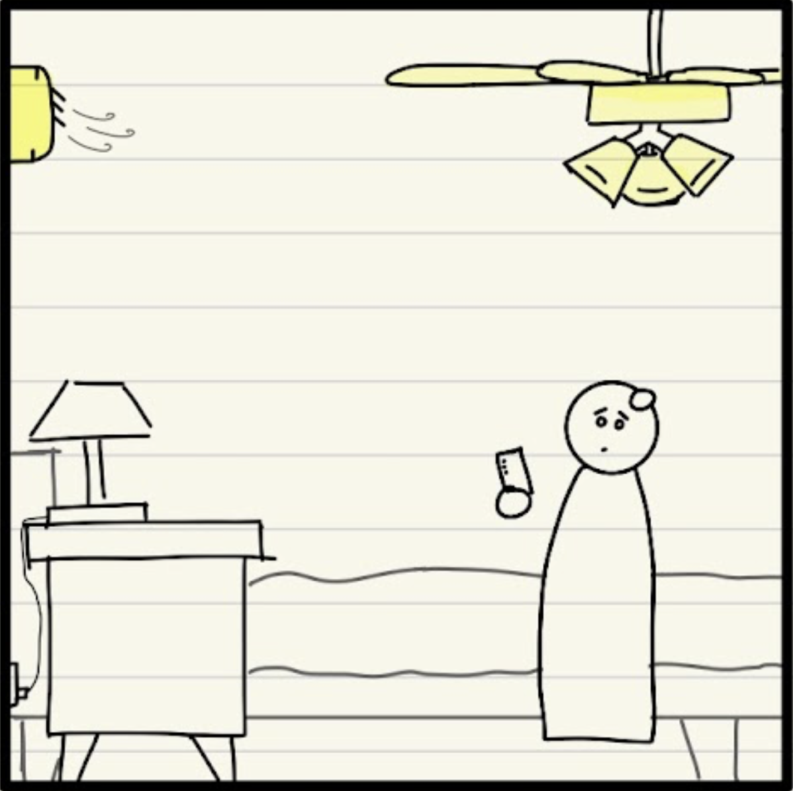
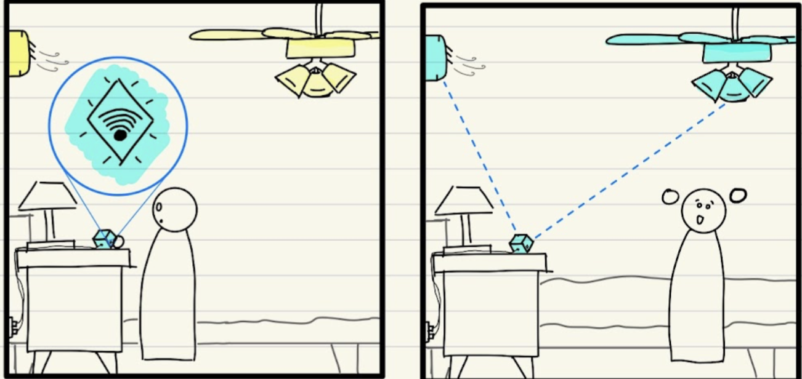
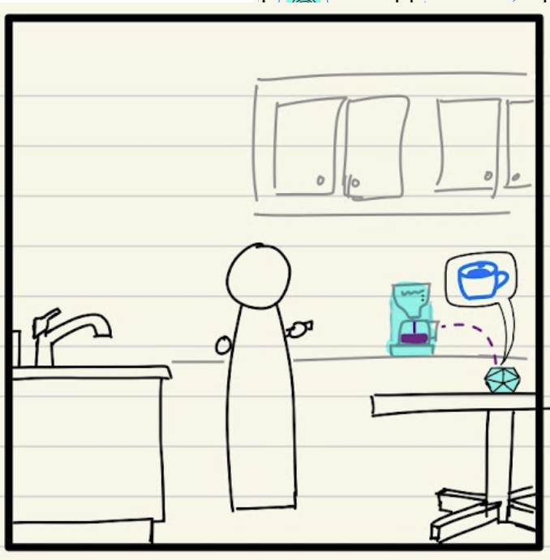
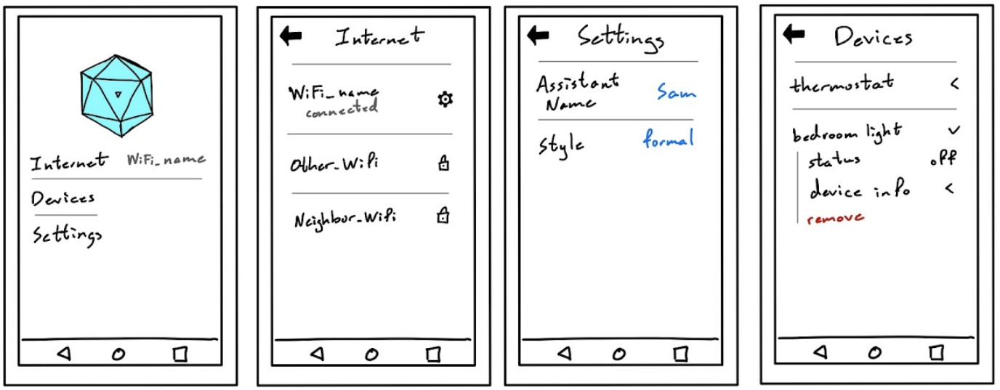
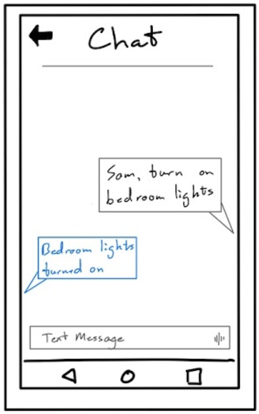
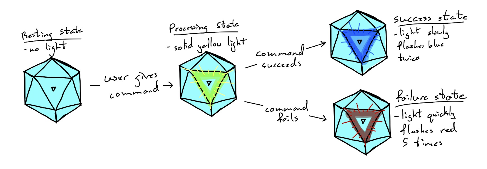
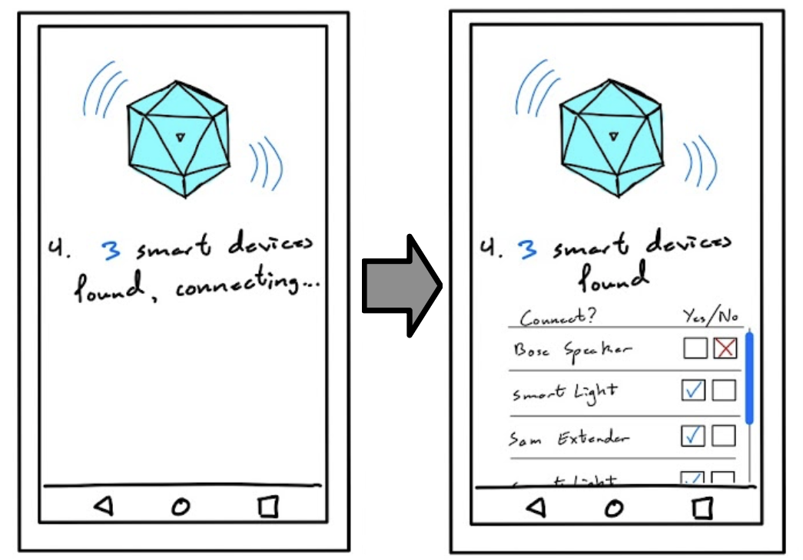
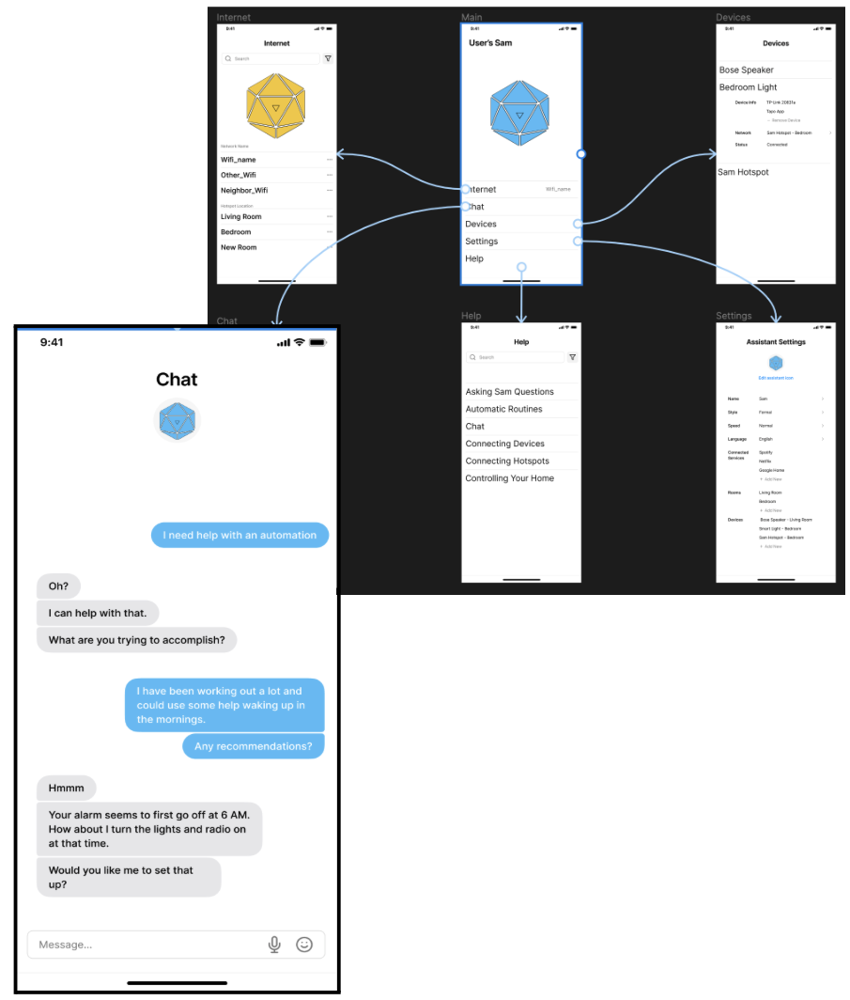

S.A.M. Overview
Problem
Many current users of smart home devices don’t benefit from their existing devices' ability to automate control of other smart devices around the home. Users tend to purchase a smart home assistant expecting it to be smart and just do the things it was designed to do. In reality, there are hang-ups at almost every turn. From the moment they plug in their device, they are met with dozens of steps to set up the core device, and then even more if they want just the most basic configuration. To truly unlock the power of the home assistant, they are looking at spending hours of their time connecting devices, downloading apps for those devices, trying to figure out how to integrate everything together, and then the daunting task of trying to set everything up in a way that makes sense for their personal routines.
Design

S.A.M. streamlines the user experience by automatically connecting to smart devices it can see and uses pattern recognition to create automatic routines based on users’ behavior. Once S.A.M. recognizes a pattern, it will ask if the user wants to automate that activity to make their life easier. A smart device should be exactly that, smart. S.A.M. also operates as a network of WiFi modules, where each module not only extends the home network but also acts as a standalone assistant that can interact with the user wherever they are at home. This also gives S.A.M. the ability to easily scan for and connect new smart devices, configuring them for the user’s rooms and finding new ways for them to interact with each module automatically. By enabling S.A.M. to learn from the user’s habits and then create automations based on those habits, the tedious process of figuring out which devices are where, when they may fit into their routines, and how to turn that information into an automation all goes away.
Early Research Insights
Knowledge of Device Capabilities
- Users don’t know what the existing devices are capable of doing, nor do they know how to look for that information in a meaningful way.
- Issues with understanding errors, issues discovering what features the device already has, and issues finding the information to learn about their preexisting problems with the device.
- Most devices on the market currently lack onboard tutorials or setup guides, opting for surface level setup booklets in the packaging that do little more than connect the device to the internet and prompt the most basic interaction.
- Built-in functions to ask the device if it can perform a task, or to prompt the device for an interesting feature would be a great step in resolving this problem.
Connectivity Problems
 - Systems have frequent issues with connecting to other devices or networks.
- Integration between multiple families of devices is understandably a hassle given the breadth of options on the market and their various internal implementations, however a
- A large majority of our research participants brought up problems connecting the device itself just to their home Wi-Fi network, even before any mention of connection to another device.
- Standardized connection behavior between devices to allow for seamless integration of lights, appliances, and entertainment systems with the onboard automation controls of a home assistant device would greatly expand the feature set of the device as long as it is quality assured and frustration-free for the user experience. Too many users have been pushed away from using their device due to frustrations relating to connection issues in their homes.
Setting Up Device Automations
- People are often inspired by online influencers who showcase extensive control of their homes through smart devices. This creates a desire to integrate similar automation in their own living spaces. Think Jarvis from Iron Man, Kit from NightRider or HAL from 2001 A Space Odyssey.
- Individuals own smart home devices but hesitate to explore their full potential due to time constraints and a lack of technical confidence. Previous struggles with simple tasks can further deter them from attempting more complex automations.
- The process of setting up smart home automations can be daunting due to the complicated nature of support websites and apps. This complexity can act as a barrier to fully utilizing the capabilities of smart devices.
- While there is an awareness that online resources exist to aid in setup and troubleshooting, the time commitment required to navigate and learn from these resources can be a significant deterrent for busy individuals.
Iterative Design Process
Our iterative design process focused on improving the ease of user interaction across the entire design. The first version of our prototype consisted of a simple app menu to allow the setup process and manage a couple of important details of the design, alongside our more involved logic trees that are used to map out how the design processes and responds to a wide range of user interactions.
After each round of inspection and usability testing we improved upon the prototype with what we felt were the most important pieces of feedback received from each test. Key revisions from this process include the entire Chat page in the app, a fallback option in the logic trees to handle uninterpretable commands, and the ability to select specific devices to connect to the system during setup. In total we performed 4 usability tests where we received feedback on most components of the paper prototype, and there were a few instances where we heard a piece of feedback, thought it wouldn’t be that big of a deal, to only then have that same feedback be reinforced by the next tester resulting in its inclusion in later versions of the prototype.

From these data-driven revisions we produced our digital mockup. The final version of the design based on our original vision shaped by real-world testing was drawn up in Figma with greater attention to detail and design choice in order to create a cohesive and pleasing design that still accomplishes the tasks and features that we felt were most important to the finished product.
Further Insights and Improvements
Enhancing Non-Verbal Interaction Options
 Originally, our design forced users to rely exclusively on verbal commands, which proved problematic for users who preferred or required alternative input methods. Feedback from our initial usability tests indicated a need for more flexibility. In response, we introduced a chat feature in the app, allowing users to type commands and receive text responses. This change improved accessibility for users with hearing impairments and provided a method for remote controlling.Improving Visibility of System State
 Users also expressed frustration with the lack of visual indicators showing the system’s state during command processing and execution. The initial design provided only auditory feedback, which could be easily missed in a noisy environment. To address this, we added visual indicators, like color changes on the device and a spinning wheel in the app. This would signify the different states like processing, success, and failure. This enhancement greatly improved user awareness and satisfaction.Simplifying Device Setup and Management in a Crowded Living Space
 The setup process initially proved confusing especially in environments with multiple smart devices. Users were concerned about unintentionally connecting to devices from neighboring homes. Based on this feedback, we added a verification step during setup, allowing users to confirm which devices to connect. This, along with a more intuitive setup walkthrough and additional help resources, streamlined the process and reduced user errors, leading to smoother initial experience.Enhancing Help and Support Features
Users noted a lack of comprehensive help and support options in the initial design. To improve this, we expanded the help section within the app, including detailed tutorials and examples for various tasks. Additionally, we introduced a feature allowing users to ask the system how to perform specific tasks, with the system providing step-by-step verbal guidance. This made the system more user-friendly, especially for those who struggled with written instructions.Resulting Design
Automations and Routines
 Chatting with S.A.M. through the app to help automatically setup an automation via written commands allows users who may not be able to use voice commands. S.A.M. is still able to process ways in which it can use the user’s home devices to set up the routine. Here, the user wants to establish a new routine that would help them wake up at a consistent time. S.A.M. is able to understand that the user would be in their bedroom where there is a smart light and speaker, so it suggests a simple routine that may help.Automatic Pairing
 A new gift shouldn’t require its user to do work, so why would they expect to struggle with setting up a new smart lamp? Instead, after unwrapping and plugging in their new smart lamp, the user just has to confirm that they are indeed adding another device to the fold. After that, S.A.M. takes over and handles the rest; bypassing the need to download proprietary apps, deal with new account creation and then the actual hard part of pairing everything together. Instead, the user gets to experience a smarter way to handle smart devices!
A new gift shouldn’t require its user to do work, so why would they expect to struggle with setting up a new smart lamp? Instead, after unwrapping and plugging in their new smart lamp, the user just has to confirm that they are indeed adding another device to the fold. After that, S.A.M. takes over and handles the rest; bypassing the need to download proprietary apps, deal with new account creation and then the actual hard part of pairing everything together. Instead, the user gets to experience a smarter way to handle smart devices!